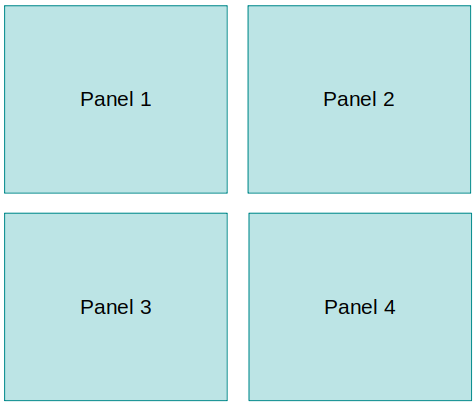
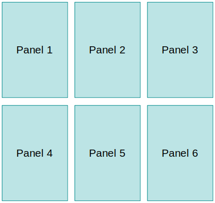
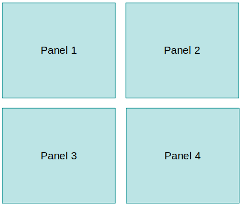
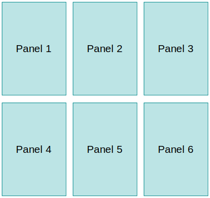

Giotto Viewer: Setting Up a Dataset
The instructions are provided below for various platforms.
1) 10X Genomics Visium datasets
2) SeqFISH/SeqFISH+/MerFISH
3) Slide-seq
1. Setting up minimally required files
At minimal, Giotto Viewer requires gene expression matrix (gene by cell or gene by bead/spot), cell coordinate matrix, and annotation files (for cell/bead/spot).
1a. Option 1: Within Giotto Analyzer
Once a dataset has been loaded in R and a Giotto object was created for the dataset, then theexportGiottoViewer() function will export the gene expression matrix, the cluster annotations, unstitched cell coordinates, and tSNE/UMAP cell coordinates.
viewer_folder = '/home/qzhu/Mouse_cortex_viewer/'
# select annotations, reductions and expression values to view in Giotto Viewer
exportGiottoViewer(gobject = VC_test, output_directory = viewer_folder, annotations = c('cell_types', 'kmeans', 'global_cell_types', 'sub_cell_types', 'HMRF_k9_b.30'),
dim_reductions = c('tsne', 'umap'), dim_reduction_names = c('tsne', 'umap'),
expression_values = 'scaled', expression_rounding = 3, overwrite_dir = T)The dimension reduction cell coordinates to output are in lines 7-8.
The generated files look like the following:
ls test.ruben/testviewer
cell_types_annot_information.annot centroid_locations.txt kmeans_annot_information.annot tsne_tsne_dim_coord.txt
cell_types_annot_information.txt giotto_expression.csv kmeans_annot_information.txt umap_umap_dim_coord.txt1b. Option 2: Setting up annotations yourself
Gene expression
A comma-delimited CSV file with header information. First row consists of cell IDs (integers starting at 1). First column is gene name. Values are distributed in a log-transformed scale, and preferably centered. Z-scores tend to work well.Cell centroids (unstitched)
Cell centroids per field of view. A CSV file, comma-delimited. First row consists of "Field of View, Cell ID, X, Y". Field of View refers to the field ID. Cell ID is an integer starting at 1, and unique in the whole dataset. X, Y are the coordinates.Clustering annotations
Multiple sets of cell annotations such as spatial domains, cell types can be added to the viewer. To add an annotation set, create two files, which share the same file name but differ only in the file extension. One file has (*.txt) extension and one file has (*.annot) extension. The first *.txt file contains a single-column of integer cluster membership of all cells. Each row is a cell in the same cell order as in gene expression. The second *.annot file is a tab-delimited file showing names of each cluster. e.g. Examples of an annotation set: X.txt, X.annot.tSNE/UMAP cell coordinates
For tSNE, UMAP panel, we need also cell coordinates in tSNE space. This file is a space-delimited two-column (X,Y) format. Coordinates in each dimension should be scaled from (-20, +20). Example of tSNE coordinate file: X.coord.txt.2. Platform specific preprocessing instructions
Before proceeding, data preprocessing steps should be performed. These steps may include image and cell coordinate stitching, other specific image related processing (scaling, rotation), image tiling (for preparing the large image for the viewer), and other steps. Preprocessing is specified through a JSON-formatted configuration file. See an example below. This allows users to specify a sequence of actions to be performed on the images.Rest assured that users usually need not to create this JSON file. They may use the provided script to auto-generate the right JSON template for the specific platform of user's interest.
2.1. SeqFISH(+)/MerFISH Platform
These data have single-cellular resolution. In addition, they have rich staining images, cell segmentations, and transcript information that can be ovelayed. While gene expression matrix, cell annotations are handled through the above mechanism in Giotto Analyzer, it does not provide image and cell segmentation handling. Therefore, below we instruct users how to incorporate images, cell segmentations using some additional Python scripts.~/.local/bin/giotto_setup_image --require-stitch=y --image=y --image-multi-channel=y --segmentation=y --multi-fov=y --output-json=step1.json
Generated step1.json template:
{
"tiff_width": 4028,
"tiff_height": 4028,
"positions": [0, 1, 2, 3, 4],
"stain_ids": [0, 1, 2, 3, 4],
"offset": "GENERIC_offset.txt",
"new_task_1": {
"task": "decouple_tiff",
"priority": 1,
"input": "GENERIC_[POSITION].tif",
"output_prefix": "pos[POSITION]",
"positions": [0, 1, 2, 3, 4]
},
"new_task_2": {
"task": "extract_roi_zip",
"priority": 2,
"input": "GENERIC_Roi_Pos[POSITION]_real.zip",
"output": "roi/roi.pos[POSITION].all.txt",
"tmp": "/tmp/pos[POSITION]",
"positions": [0, 1, 2, 3, 4]
},
"new_task_3": {
"task": "stitch_image",
"priority": 3,
"input": "pos[POSITION].[STAINID].tif",
"output": "pos[STAINID].joined.tif",
"offset": "offset.txt",
"positions": [0, 1, 2, 3, 4],
"stain_ids": [0, 1, 2, 3, 4]
},
"new_task_4": {
"task": "stitch_coord",
"priority": 4,
"input": "GENERIC_centroids.csv",
"output": "cell.centroid.stitched.pos.all.cells.txt",
"offset": "offset.txt",
"positions": [0, 1, 2, 3, 4]
},
"new_task_5": {
"task": "stitch_segmentation_roi",
"priority": 5,
"input": "roi/roi.pos[POSITION].all.txt",
"output": "roi.stitched.pos.all.cells.txt",
"offset": "offset.txt",
"positions": [0, 1, 2, 3, 4]
},
"new_task_6": {
"task": "align_segmentation_and_cell_centroid",
"priority": 6,
"input_cell_centroid": "cell.centroid.stitched.pos.all.cells.txt",
"input_segmentation": "roi.stitched.pos.all.cells.txt",
"output": "segmentation.to.cell.centroid.map.txt"
},
"new_task_7": {
"task": "tiling_image",
"priority": 7,
"input": "Pos.ch[STAINID].joined.tif",
"output_dir": "tiles.[STAINID]",
"zoom": 6,
"stain_ids": [0, 1, 2, 3, 4]
},
"new_task_8": {
"task": "prepare_gene_expression",
"priority": 8,
"input": "giotto_expression.csv",
"output_dir": "all.genes",
"csv_sep": ",",
"csv_header": 0,
"csv_index_col": 0,
"num_genes_per_file": 100
}
}Next, modify the generated JSON file
~/.local/bin/giotto_step1_modify_json --input step1.json --add-image "segmentation_staining_1_MMStack_Pos[POSITION].ome.tif" --output step1.json
~/.local/bin/giotto_step1_modify_json --input step1.json --change-positions 0 1 2 3 4 --output step1.json
~/.local/bin/giotto_step1_modify_json --input step1.json --change-stain-ids 0 4 7 --output step1.json
~/.local/bin/giotto_step1_modify_json --input step1.json --change-offset offset.txt --output step1.json
~/.local/bin/giotto_step1_modify_json --input step1.json --change-segmentation "RoiSet_Pos[POSITION]_real.zip" --output step1.json
Notes:
- --add-image can accept multiple images. The wild character [POSITION] can be used as a placeholder for position IDs.
- --change-segmentation can also accept segmentations for multiple images. The RoiSet_Pos[POSITION]_real.zip for example.
- --change-stain-ids: Stain refers to Nissl, DAPI, polyA, etc. Since each tiff is a multi-image stack, stain-id refers to the ID within each TIFF that refers to Nissl, DAPI, or polyA
{
"tiff_width": -1,
"tiff_height": -1,
"positions": [0, 1, 2, 3, 4],
"stain_ids": [0, 4, 7],
"new_task_1": {
"task": "decouple_tiff",
"priority": 1,
"input": "./segmentation_staining_1_MMStack_Pos[POSITION].ome.tif",
"output_prefix": "pos[POSITION]",
"positions": [0, 1, 2, 3, 4]
},
"new_task_2": {
"task": "extract_roi_zip",
"priority": 2,
"input": "RoiSet_Pos[POSITION]_real.zip",
"output": "roi/roi.pos[POSITION].all.txt",
"tmp": "/tmp/pos[POSITION]",
"positions": [0, 1, 2, 3, 4]
},
"new_task_3": {
"task": "stitch_image",
"priority": 3,
"input": "pos[POSITION].[STAINID].tif",
"output": "pos[STAINID].joined.tif",
"offset": "offset.txt",
"positions": [0, 1, 2, 3, 4],
"stain_ids": [0, 4, 7]
},
"new_task_4": {
"task": "stitch_coord",
"priority": 4,
"input": "Cell_centroids.csv",
"output": "cell.centroid.stitched.pos.all.cells.txt",
"offset": "offset.txt",
"positions": [0, 1, 2, 3, 4]
},
"new_task_5": {
"task": "stitch_segmentation_roi",
"priority": 5,
"input": "roi/roi.pos[POSITION].all.txt",
"output": "roi.stitched.pos.all.cells.txt",
"offset": "offset.txt",
"positions": [0, 1, 2, 3, 4]
},
"new_task_6": {
"task": "align_segmentation_and_cell_centroid",
"priority": 6,
"input_cell_centroid": "cell.centroid.stitched.pos.all.cells.txt",
"input_segmentation": "roi.stitched.pos.all.cells.txt",
"output": "segmentation.to.cell.centroid.map.txt"
},
"new_task_7": {
"task": "tiling_image",
"priority": 7,
"input": "Pos.ch[STAINID].joined.tif",
"output_dir": "tiles.[STAINID]",
"zoom": 6,
"stain_ids": [0, 4, 7]
},
"new_task_8": {
"task": "prepare_gene_expression",
"priority": 8,
"input": "giotto_expression.csv",
"output_dir": "all.genes",
"csv_sep": ",",
"csv_header": 0,
"csv_index_col": 0,
"num_genes_per_file": 100
}
}Once we have finished modifying, we can then use the step1.json to run the actual tasks.
~/.local/bin/smfish_step1_setup -c step1.json
2.2. Will this setup instruction accept multiple images? Does it handle stitching of images/coordinates?
Yes to all of these questions! In giotto_setup_image above, --require-stitch=y --image=y --multi-fov=y, are created exactly for this purpose. With this stitching template, you need to specify the offset.txt file that defines how you want the images to be stitched to each other: Offset filePos0.x Pos0.y 0 0
Pos1.x Pos1.y 1654.97 0
Pos2.x Pos2.y Pos1.x+1750.75 0
Pos3.x Pos3.y Pos2.x+1674.35 0
Pos4.x Pos4.y Pos3.x+675.5 1438.02Then, in giotto_step1_modify_json, remember to specify offset: --change-offset offset.txt.
Not only are images stitched, but also the coordinates of the cells, the segmentations of the cells are also stitched according to the same offset file. (see sections "stitch_coord", "stitch_segmentation_roi" in step1.json file)
As such, the input cell coordinates, segmentations should be given unstitched.
2.3. 10X Genomics Visium Platform
10X visium has made all the files standardized with standard file names and they are relatively easy to setup. Visium provides also the underlying staining image for visualization. It is incorporated into the viewer.#create step1 json template for Visium
~/.local/bin/giotto_setup_image --require-stitch=n --image=y --image-multi-channel=n --segmentation=n --multi-fov=n --output-json=step1.json
#automatically fill in image dimension in the step1 json file
~/.local/bin/giotto_step1_modify_json --add-image V1_Adult_Mouse_Brain_image.tif --input step1.json --output step1.json
#do the step1 actions
~/.local/bin/smfish_step1_setup -c step1.json
2.4. Slide-seq Platform or Other Simple Dataset
We use the slide-seq example to illustrate how users will setup a viewer instance without images or segmentations.#create step1 json template for Visium
~/.local/bin/giotto_setup_image --require-stitch=n --image=n --image-multi-channel=n --segmentation=n --multi-fov=n --output-json=step1.json
#do the step1 actions
~/.local/bin/smfish_step1_setup -c step1.json
3. Setting up Giotto viewer panels
The way Giotto Viewer is organized on the screen is a set of panels. Each panel can be one of Physical Space Panel, Expression Space Panel (i.e. UMAP or tSNE), Transcript Localization Panel. Panels may be arranged horizontally or vertically. Multiple panels can be composed on the screen (such as 2, 4, 6, etc) which would enable a comparison of multi-modality information. 



Viewer panels are setup also through a JSON setting file. But this JSON is different from the step1.json so do not confuse the two.
3.1. SeqFISH(+)/MerFISH Platform
3.1.1: Case 1: Setting up two-panel configuration
~/.local/bin/giotto_setup_viewer --num-panel=2 --input-preprocess-json=step1.json --panel-1=PanelPhysical --panel-2=PanelTsne --output-json=step2.json --input-annotation-list=annotation_list.txt
3.1.2: Case 2: Setting up four-panel configuration
~/.local/bin/giotto_setup_viewer --num-panel=4 --input-preprocess-json=step1.json --panel-1=PanelPhysical --panel-2=PanelTsne --panel-3=PanelPhysical --panel-4=PanelTsne --output-json=step2.json --input-annotation-list=annotation_list.txt
{
"num_panel": 4,
"annotation_set": {
"num_annot": 2,
"annot_1": {
"file": "testviewer/cell_types_annot_information.txt",
"name": "cell.type.unsup"
},
"annot_2": {
"file": "testviewer/kmeans_annot_information.txt",
"name": "kmeans"
}
},
"map_1": {
"type": "PanelPhysical",
"maxBound": 4096,
"id": 1,
"annot": "cell.type.unsup",
"tile": "nissl",
"dir_polyA": "imapr26.4",
"dir_nissl": "imapr26.0",
"dir_dapi": "imapr26.7",
"gene_map": "10k.genes/gene.map",
"segmentation_map": "segmentation.to.cell.centroid.map.txt",
"segmentation": "roi.stitched.pos.all.cells.txt",
"dir_gene_expression": "10k.genes",
"gene_list": "gene.list.10k",
"map_height": "500px"
},
"map_2": {
"type": "PanelTsne",
"maxBound": 500,
"id": 2,
"file_tsne": "test.cell.type.unsupervised.id.txt",
"annot": "cell.type.unsup",
"map_height": "500px"
},
"map_3": {
"type": "PanelPhysical",
"maxBound": 4096,
"id": 3,
"annot": "cell.type.unsup",
"tile": "nissl",
"dir_polyA": "imapr26.4",
"dir_nissl": "imapr26.0",
"dir_dapi": "imapr26.7",
"gene_map": "10k.genes/gene.map",
"segmentation_map": "segmentation.to.cell.centroid.map.txt",
"segmentation": "roi.stitched.pos.all.cells.txt",
"dir_gene_expression": "10k.genes",
"gene_list": "gene.list.10k",
"map_height": "500px"
},
"map_4": {
"type": "PanelTsne",
"maxBound": 500,
"id": 4,
"file_tsne": "test.cell.type.unsupervised.id.txt",
"annot": "cell.type.unsup",
"map_height": "500px"
},
"interact_1": ["map_1", "map_2", "map_3", "map_4"],
"sync_1": ["map_1", "map_3"],
"sync_2": ["map_2", "map_4"]
}3.2. 10X Genomics Visium Platform
We will use 2-panel configuration for illustration, but 4-panel configuration setup is similar.~/.local/bin/giotto_setup_viewer --num-panel=2 --input-preprocess-json=step1.json --panel-1=PanelPhysical10X --panel-2=PanelTsne --output-json=step2.json --input-annotation-list=annotation_list.txt
3.3. Slide-seq Platform or Other Simple Dataset
We will use 2-panel configuration for illustration, but 4-panel configuration setup is similar.~/.local/bin/giotto_setup_viewer --num-panel=2 --input-preprocess-json=step1.json --panel-1=PanelPhysicalSimple --panel-2=PanelTsne --output-json=step2.json --input-annotation-list=annotation_list.txt
4. Optional: customize linking and interactions between panels (>=4 panels)
For 4-panel case, we can specify how we want the panels to be linked. Open the step2.json that is generated in previous step by giotto_setup_viewer. At the end of the JSON, look for parameters"interact_1": ["map_1", "map_2", "map_3", "map_4"],
"sync_1": ["map_1", "map_3"],
"sync_2": ["map_2", "map_4"]"
"sync_1" means that map_1 and map_3 are further synchronized. Eg. as you pan or zoom panel 1, then panel 3 will also automatically update its pan and zoom to be the same as panel 1.
"sync_2" means that map_2 and map_4 are further synchronized. Eg. as you pan or zoom panel 2, then panel 4 will also automatically update its pan and zoom to be the same as panel 2.
"sync_1" and "sync_2" are separate events.
You can only sync panels of the same type (either both PanelPhysical or both PanelTsne).
5. Complete the rest of setup
Use the step2.json to complete the rest: auto-generate webpages.#do the step2 actions
~/.local/bin/smfish_read_config -c step2.json -o test.dec6.js -p test.dec6.html -q test.dec6.css
#copy extra js and css folders
~/.local/bin/giotto_copy_js_css --output .
python3 -m http.server
6. Launch the Giotto Viewer
Open your browser, navigate to http://localhost:8000/. Then click on the file "test.dec6.html" to see the viewer.7. Exporting cell selections for Giotto Analyzer reanalysis
Suppose a user makes two cell selections using the Giotto Viewer, saves each selection separately to a file (/tmp/selection.1.txt and /tmp/selection.2.txt). The following shows how to perform differential expression analysis involving these two selections of cells in Giotto Analyzer, demonstrating iterative analysis.#load existing cell annotations
cell_metadata=pDataDT(VC_test)
annot = 1:nrow(cell_metadata)
annot[1:length(annot)] = 0
#read selected cell indices (1)
yy<-read.table("/tmp/selection.1.txt", header=F, row.names=NULL)
annot[t(t(yy))] = 1
#read selected cell indices (2)
yy<-read.table("/tmp/selection.2.txt", header=F, row.names=NULL)
annot[t(t(yy))] = 2
#create a new column in cell metadata
cell_metadata=base::cbind(cell_metadata, annot)
VC_test@cell_metadata = cell_metadata
#do one-vs-all comparison for selected cells
markers = findMarkers_one_vs_all(gobject = VC_test, expression_values = 'normalized', cluster_column = 'annot', method = 'scran', pval = 0.01, logFC = 0.5)
#do a pairwise comparison between two cell selections
markers = findMarkers(gobject = VC_test, expression_values = 'normalized', method = 'scran', cluster_column = 'annot', group_1 = 1, group_2 = 2)